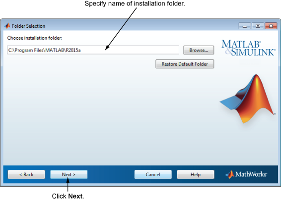

MathWorks® 제품을 설치할 폴더의 이름을 지정합니다. 디폴트 설치 폴더를 그대로 두거나 찾아보기를 클릭하여 다른 폴더를 선택합니다. 폴더가 없으면 인스톨러에서 폴더를 만듭니다.
폴더 이름을 지정할 때는 영숫자와 일부 특수 문자(예: 밑줄)를 사용할 수 있습니다. 폴더 이름을 입력할 때 실수를 하여 처음부터 다시 시작하려는 경우 디폴트 폴더 복원을 클릭합니다. 원하는 항목을 선택한 후 다음을 클릭합니다.
